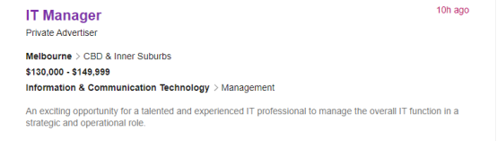
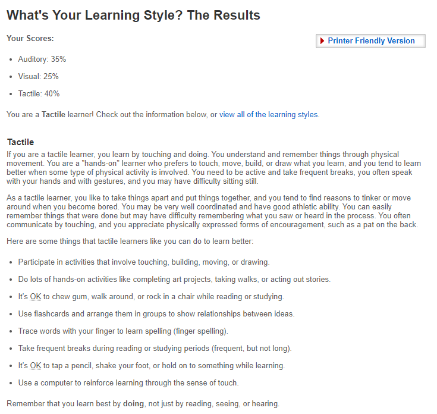
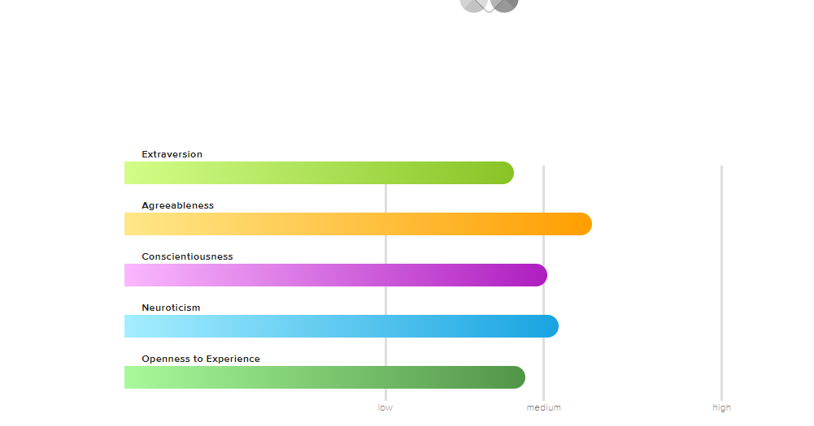
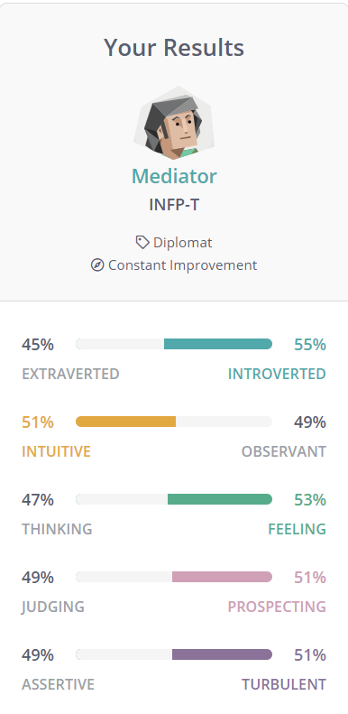

Personal Information
My Chinese name is Hao Zhong and English name is Howard. I come from China. Now I am studying Bachelor of Information Technology in RMIT.
My hobbies are playing games, watching movies and playing guitar.

My Chinese name is Hao Zhong and English name is Howard. I come from China. Now I am studying Bachelor of Information Technology in RMIT.
My hobbies are playing games, watching movies and playing guitar.
I think IT is a very interesting major, because IT covers numerous aspects of information. I choose to study IT because it allows me to learn many computer languages which will be very helpful in terms of my future job hunting. Another reason why I wish to learn IT is once I was playing games, a question came up to my mind, “Why can't I participate in the game industry? Why can’t I be a cool game designer?” From that moment, I began to gradually show more interests in this major. The Information Technology in RMIT is highly ranked among all universities in Australia. Therefore, I think I can learn knowledge and skills better at in this University. I need to mention that my brother and many other friends are also studying at RMIT, so this uni seems more attractive to me. Finally, I hope that I can gain all the knowledge my lectures offered, and hopefully, I will be proficient in computer language and computer composition, etc.

My ideal job is a full-time, high-paying and permanent role in a large-scale company. This kind of jobs are attractive to me for the following reasons. Firstly, I am an international students who wish to graduate with professional knowledge and sophisticated technology I learned from University. With these abilities, I could fulfill my dreams of being an elite in the society and have enough salary to support myself and my family. After searching online, I realized that this “IT Manager” role fits my ideal job well. The qualification and skills required to apply for this position is implementing industry leading websites, maintaining the overall availability, integrity, stability and security of systems and managing the software development and progression of software structure initiatives. At the same time, at least five years of advanced IT experience is required, as well as experience and understanding of owner operator networks. Now I have neither qualifications nor experience, so I plan to finish my undergraduate degree at first, then, I suppose I will have to continue to study IT Manager courses as my major for my master degree. However, this will not be an end, after graduation, I need to start my career as an IT employee. After years of experience, when I am ready and qualified to apply for my ideal job, I will certainly apply for this position.



For me, these test results mean that I have a new understanding of myself and know what aspects I need to improve. In the team, I will first silently listen to the ideas of the people in the team, and then explain what I want to do based on the situation. When forming a team, I will try to find people who each have their own advantages, so that it is easy to complete the group tasks.
In this assignment, I will briefly introduce the software I wish to design which is based on my desire to control my addiction to phone and computer games as well as helping other people who are in the same trouble. I plan to call this software "Time Manager”. In this essay, the purpose of my design, the characteristics and the content of the product,and the tools and skills required by the designer will all be explained in detail. Furthermore, the potential obstacle of this software is mentioned as well. If cellphone or computer companies refuse to accept the existence of my access control software, my “Time Manager” will have no place on the app store.
The original intention of designing this software is because sometimes I can't control myself to play mobile or computer games. Even though there are something far more important on my list, I still choose to play mobile phone or computer games instead, because I can't reject the temptation. Rob Marvin (2018) said in his article that in year 2017, adults spend an average of 5.9 hours a day on digital media, including laptops, desktops, and mobile phones. My software which is call “Time Manager” is designed to help me and many other people who overly use digital equipment for leisure purpose.
For me, these test results offered me a brand new understanding of myself and helped me realize what aspects I need to improve. In a team, I will be kind, fair and show my initiative. In a group discussion, I would like to carefully listen to other team members’ idea in the beginning, then offer my perspectives. I think it is extremely important to let everyone engage and have the same opportunity to express their ideas. When forming a team, I will try to find people who each have their own strength. A good team should be a team with all kinds of people in it. When a group task is given to the team, every member should contribute to this task by doing their best.
I will use python or JavaScript to design this software, because these two are very practical programming software. Furthermore, movement sensor in the phone is also going to be used. Users’ movement will be uploaded to the software, so it could warn users when they are playing while walking. Then, I will use GitHub to design my website to promote the software, so that more people can know about it. After this, I need to test my software on mobile phones and computers to find out whether this software can work properly. At last, I plan to contact phone and computer companies to negotiate and publish my software.
When designing this "Time Manager", I should be accurate in using programming software, familiar with every programming language and proficient in writing codes. I also need to have the ability to apply the concept I learnt to other problems. Other skills, such as communication skills, problem-solving capability, writing skills and mathematical skills are equally important. In my case, these skills are not too hard to gain. As long as I could attend every session in university, stay self-motivated and pay attention to details , I could be able to obtain these skills in the future.
If the project is successful, I think many users will change their lifestyle into a more meaningful way. By reducing time used in mobile or computer games, people can slowly get rid of this inappropriate behaviour and start to realize that there are plenty of other activities, such as physical exercise which could help them in many ways. For myself, after using this “Time Manager”, I shall spent less time on the games and have more free time to engage in the activities on my to do list, such as making foreign friends, play sports and go hiking. With an active and accurate supervisor software, I could control my addiction to large extent. The impact of this software is huge, since it could save thousands of people and families who are struggled in this particular game addiction condition.
Hye-Jin K,Jin-Young M,Hyun-Jin K＆Kyoung-Bok M 2017,‘Accident risk associated with smartphone addiction: A study on university students in Korea’，Journal of Behavioral Addictions, Volume 6: Issue 4, viewed 23 Mar 2021 Link to this reference
Jack,N 2019,‘Apple targets apps that fight iPhone addiction’,The Philadelphia tribune, 30 Apr, viewed 23 Mar 2021 Link to this reference
Rob,M 2018, ‘Tech Addiction By the Numbers: How Much Time We Spend Online’,PCMag Australia. 11 Jun 2018. viewed 23 Mar 2021. Link to this reference